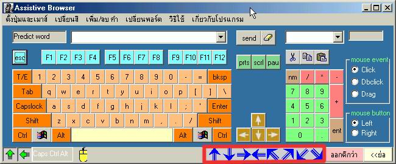

Assistive Browser for The Disable โปรแกรมควบคุมบราวเซอร์สำหรับช่วยเหลือคนพิการ
ส่วนของการเคลื่อนย้ายโปรแกรม

จะเป็นปุ่มไว้สำหรับเคลื่อนย้ายตัวโปรแกรม Assistive Browser ไปยังตำแหน่งต่างๆ ของหน้าจอ ในกรณีที่บังข้อความหรือตำแหน่งที่เราต้องการดู เพื่อสะดวกสำหรับกรณี ไม่ต้องลากเมาส์แล้วปล่อยตัวโปรแกรม เพื่ออำนวยความสะดวกให้ผู้ใช้ ได้ใช้งานสะดวกขึ้น